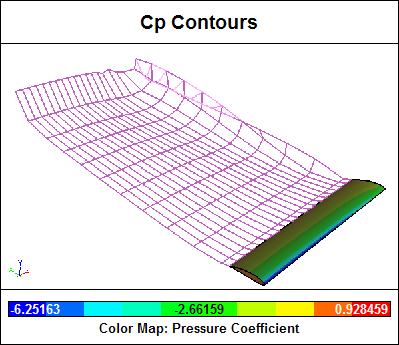
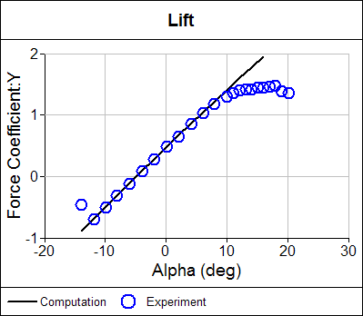

NACA 4415 Airfoil Calculation
Rotor blade design is a key element in determining the efficiency of a wind turbine. A crucial precursor to a final rotor blade design is to select one or more 2D airfoil sections to form a smooth blade profile. A wind tunnel study of a 2D airfoil (NACA 4415), typical of an airfoil used by wind turbine rotors, is compared with predictions made by our Panel Flow add-on.
 Wind TurbineLicense: CC BY 2.0, phault
Wind TurbineLicense: CC BY 2.0, phault
The study, conducted in the Ohio State University Aeronautical and Astronautical Research Laboratory 7x10[feet] Subsonic Wind Tunnel, produced an extensive array of data that included pre- and post-stall aerodynamic coefficients. The subsonic speeds of the tests make them ideal for comparison with simulation results from our Panel Flow add-on. Also the tests provide pressure-coefficient profiles at various angles of attack (alpha), and lift and form drag coefficients, which should be well predicted by our panel method for pre-stall conditions.
The wind tunnel data were not corrected for tunnel wall effects. Using our Panel Flow add-on it is possible to make an estimate for the alpha correction necessary to eliminate the wall effects and therefore mimic free air.
Method
To simulate a 2D airfoil in our 3D simulation, the 2D airfoil section was extended 5 chord lengths in the span-wise direction using our Builder add-on. Symmetry was also enabled, effectively doubling the span to 10 chord lengths. All data were extracted on the symmetry plane to maximize the distance to the ends and thus minimize end effects on the extracted data.
A wake was specified as originating at the airfoil trailing edge. An automated, pseudo time-stepping, force-free technique was used to convect wake elements downstream.

Surface pressure coefficient contours and wake elements for alpha = 16 are shown above.
Time was coupled to alpha using our Transient add-on. Caedium then performed an automated alpha traverse, calculating steady-state solutions at each angle.
Results
Increasing alpha by 0.7 degrees for all our calculations resulted in excellent agreement with the experimental lift and drag coefficients at Reynolds number = 2x106 in the pre-stall range. This correction most likely accounts for the wind tunnel wall effects in the tests, thus decreasing the test results’ alpha by 0.7 degrees would be equivalent to free air for the tests at Reynolds Number = 2x106.

The lift coefficient plot above shows excellent agreement between our computation and the experiment within the linear range between stalls. During and after stall, viscous effects dominate the flow, thus our inviscid computation, as expected, does not agree with the experiment.

The form drag coefficient plot above shows good agreement between our computation and the experiment within the same range as that for the lift coefficient. Note that total drag (skin friction drag + form drag) was not measured in the experiment. Inviscid methods, such as the panel method used by our Panel Flow add-on, cannot predict skin friction without modifications.
Shown below are a series of pressure coefficient distribution comparisons between our computation and the experiment at various experimental alphas within the range showing good agreement with the lift coefficient. Note that lines represent the computation and open circles represent the experiment.
Notice the reasonably good agreement of all the computations with the experimental pressure coefficient distributions for the range of alphas shown.
Try For Yourself
The sym project file for this study can be viewed in Caedium or you can investigate this case yourself using our Panel Flow add-on. To take advantage of the automated alpha sweep you will need to use our Transient add-on.
The most convenient way to view and edit this case is to use our Professional add-on that combines all the add-ons used during this example.
Feedback
Questions? Ideas? Problems?

Comments
NACA 4415 Tutorial
Check out our tutorial Flow Over an Airfoil for more on the NACA 4415 airfoil.
AoA
Hello,
can you tell me plz, how can I change the angle of attack for simulation?
Regards,
Slawek
See the tutorial
See the previous comment about the NACA 4415 tutorial.
Arbitrary AOA
Whoops that tutorial just shows how to set an AOA = 0 for the velocity. To set an arbitrary AOA see how the reference velocity is set in the tutorial "Transonic Flow Over the NACA 0012 Airfoil".
naca4415_re2x10e6.sym
Hello,
I try to go deeper into this and I have a request,
can you please post or send some more information on how to do the simulation like in naca4415_re2x10e6.sym file, I did the basic tutorial on analysis like from from web,
I downloaded file to compare results and I noticed there is a lot of new interesting stuff in that file,
like doing 30 seconds simulation during which airfoil rotates changing angle of attack.
also plotting lift coeficcient over angle of attack.
Can you please help me out?
Regards
See the pitching wing example
For a similar simulation using the Panel Method see "Screencast of Transient Air Flow Over a Pitching Wing".
plots question
Thank you for your response on my last question,
your software really can suck man down,
I look at it every spare minute,
I have another question though,
can you plz tell me how to plot drag and lift coefficients over alpha?
also how to do the same with Cp over arbitrary alpha?
I try to retrace steps from file with naca4415 but just can't do it,
Regards,
Sławek
Use Vector Variables, Rotation
For your simulation alpha is equivalent to Vector Variables->Rotation on the Results Tool Palette. Drag and drop that variable on to your lift/drag monitor and assign it to the X-axis.
Make sure the default Scalar for the Rotation matches the axis of rotation.
data source
where can i find the complete wind tunnel test data which have benn used in this article? info like if the test airfoil was tripped or not, and like if the test was steady or not
thanks
Wind tunnel test data
I used the experimental data supplied by OSU Wind-Tunnel Test Data and I updated the broken url link in the article.